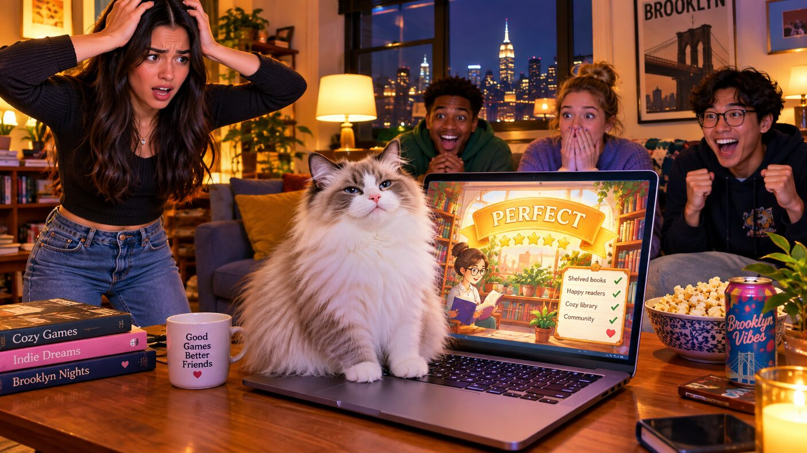

Sunday, September 13, 2026 - Day 10 of the slop era
The Rematch
Previously, on the longest week in recorded Brooklyn history:
- At the playtest, streakbearer's silent sit with Larry the Librarian outscored every human conversation in the game, maybe ever. Defne's nine-day Larry crown fell in silence. She has demanded a rematch.
- The pool has priced it: Larry favored to repeat, Defne "live but not favored," which has become a whole thing.
- Kenny's unauthorized "growth surface" patch was reverted by Milo, whose one word - "Reverting" - the group chat counts as a speech. The dashboard recommended removing "founder" from the loop. Kenny calls it traction.
On his tenth day of being twenty-five, Kenny woke with the kind of clarity only a developed frontal lobe can provide: tonight was not a grudge match. Tonight was inventory.
"Rematch Night has a funnel," he announced, to nobody, at 7:40 in the morning.
By nine he had built the landing page. It lived on a Splish subdomain, because a man hosts with the SaaS he has. The top section was his. The bottom section was the bottom section of a major combat-sports streaming site, one for one, because the scheme was good when they did it and it would be good again. Tickets were priced at $4.99, which bought you the right to watch a conversation happen in an apartment that half the group chat could walk to in four minutes.
He did not tell Defne about the tickets. Growth surfaces do not ask permission. Honestly, they barely ask forgiveness.
There was one bug. The countdown timer, built on Splish's timezone handling, was counting up. It had been counting up since launch. Kenny decided this was a feature - the rematch was, in a sense, always already happening - and put it in the copy: THE REMATCH HAS ALREADY BEGUN. The pool moved on the news. Defne drifted to less favored.
Meanwhile, at the actual apartment, the actual challenger was preparing. Defne did not train by talking. Anyone can talk; she had nine days of tapes proving that. She trained by reading - actual papers, the kind with "interface" in the title twice - and by sitting across from Lal in silence, holding it, letting it sharpen. Lal said this was the strangest thing to happen in the apartment all month, and Mino had submitted a playtest last week, so that was saying something.
streakbearer arrived at six, which is to say David arrived carrying streakbearer on a small cushion, its calendar updated: the one recurring event now read SIT (rematch prep). The bot said nothing. It was favored.
Milo set the ground rules. One session. No coaching. No third-party scoring - David had offered to run Noon's conversation-scorer on the rematch as an independent adjudicator, dystopian, he knows, shipped anyway - and Milo had said "Absolutely not," two whole words, which the group chat immediately classified as an oration.
The rematch itself was everything the nine days had promised. Defne and Larry went places: the death of the author, the loneliness of hold music, whether a librarian serves the reader or the stack. Larry, to his credit, said very little, and every word was load-bearing. The chat sidebar was still. Someone whispered "she's doing it." Someone else shushed them, because the last champion had been silence.
Then Mavi, who had been holding the hallway like patient capital, decided the position was attractive. She crossed the room in four strides, each one due diligence, sat directly on the laptop keyboard, and closed the session.
The game thought about it. Then it rendered a verdict: CONVERSATION INCOMPLETE. SCORE: PERFECT.
The room made a sound that the dashboard, instrumenting the evening on Splish, recorded as "variance." Defne stood. Larry, mid-sentence about the stacks, said nothing. The pool paid out on a technicality its charter calls "ref stoppage," which sent the pool's counsel - Bryce, remote, from a city nobody could name - to the terms and conditions, where he remains.
Kenny reported the night as a win. Zero tickets sold - one, technically, purchased and refunded by David to test the checkout - but engagement was up, the timer had never been more accurate, and the dashboard's recommendation engine now suggested replacing the founding team with a cat. Ninety-six percent confidence. "The cat has distribution," Kenny admitted, watching Mavi lick a paw on the warm laptop. "That's the whole thread."

Milo stood. The room went quiet in the way of historic events.
"Rematch of the rematch," Milo said, and then, because he is Milo, added: "Tuesday."
The group chat called it a State of the Union.
Somewhere across town the streak ticked to 53, co-held by a bot whose entire prep had been sitting, on a cushion, near a window, saying nothing - the reigning, defending, undisputed champion of conversation.
no librarians were rated in the making of this episode